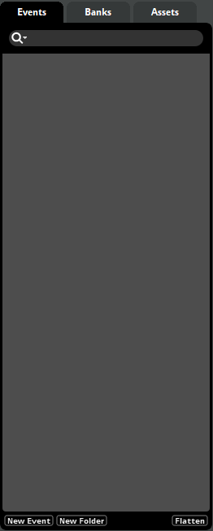

FMOD Studio User Manual 1.10
- Welcome to FMOD Studio
- FMOD Studio Concepts
- Organizing the Project
- Authoring Events
- Working with Instruments
- Managing Assets
- Getting Events into Your Game
- Mixing
- Profiling
- Editing During Live Update
- Advanced Topics
- Event Macro Controls Reference
- Plug-in Reference
- Modulator Reference
- Built-In Parameters Reference
- Scripting
- Scripting API Reference
- Keyboard Shortcut Reference
- Glossary
- Appendix: Celeste Getting Started Guide
3. Organizing the Project
The main building blocks of an FMOD Studio project are events.
Events are important because of how flexible they are. You can have a simple 2D event that loops for music, and another event that changes its output on the fly. The parameters of an event can trigger new sounds, or even alter or reroute audio signals, giving a very real and dynamic feel to your game.
Events are the fundamental units of sound design in FMOD Studio, and most of your time spent working with FMOD Studio will be in the event editor window.
The event editor window is the first window that opens when FMOD Studio is run. This window contains a variety of features and tools for creating, editing and organizing events.
There are three browsers that can appear in an event editor window: the events browser, the banks browser, and the assets browser. Only one of these can be displayed at a time. You can change which browser is displayed by clicking on the tabs at the top of the browser.
You are able to organize your project to work best with your workflow in these browsers.

You can hide all folders and show only the items in the current browser on a single level by clicking on the "Flatten" button. This is useful for searching for items without showing the folders that they reside in.
You can drag a project element from any browser over another browser's tab, and FMOD Studio will switch to that browser.
3.1 Events Browser
The events browser displays your project's events and event folders. It allows you to create, assign and organize events.
To create an event in this browser, right click on an empty space and select "New Event". This opens a sub-menu, in which you have the option to make a 3D Event, a 2D Event, or a default event.
3D events include the spatializer effect on the master track and are set to the current platform's channel format by default. 2D events do not include any effects by default and is set to "Automatic" output, taking the channel format from the content placed in the event. For more information, please see the channel formats section of the Mixing chapter.
You can make templates of events called defaults and create new events with these through the "Defaults" sub-menu.
To create a folder, right click on an empty space and select "New Folder". You can place as many folders as you need into your project and nest folders within folders. You can drag and drop both folders and events into other folders to organize your project to best suit your workflow.
Right click on an event and select "Move Into New Folder" to create a new folder on that hierarchical level and move the event into that newly created folder.
To filter which items are displayed, click on the search bar at the top of the browser and type part of the name of the item you want to see, or by click on the loupe icon and selecting an option from the loupe menu.
Clicking on an event displays it in the event editor window's editor and overview panes. Hold down the 'Shift' or 'Ctrl' keys when clicking on events to select multiple events, allowing you to edit or manipulate them as a group.
The events browser can be found in the event editor window and the events browser window.
3.1.1 Events and Event Instances
An event is an instanceable unit of sound content that can be triggered, controlled and stopped from game code. Everything that produces a sound in a game should have a corresponding event. An event defines how an audio asset behaves and sounds.
When an FMOD Studio event is called in your game's engine, this creates an instance of said event. Once created, this instance is independent of the original event and of any other instances of that event that might be playing. Once it is finished, that instance is then removed from memory.
This means that multiple instances of the same event can have different parameter values, instead of needing a different event for each and every event instance.
As an example, should your game require footstep sounds for all enemies on screen; rather than creating multiple events for each enemy, the same event can be shared across all enemies - each playing in a different 3D location and having different parameter values passed in for floor surfaces and velocity/pitch of footsteps.
3.1.2 Referenced Events
One of the most powerful functions of FMOD Studio is the ability to reference an event within an event.
This allows for an instrument with one type of function to be nested within a instrument with a separate function. In this manner it is possible to combine the entire range of instrument functions to achieve a vast range of output results.
Each referenced event can be opened in a separate tab or window for ease of workflow and editing.
To create a referenced event, drag and drop an event from the event browser onto an audio track in the event editor window. This creates an event instrument which will play the event that it is referencing when triggered.
By default, built banks include any referenced events and their sample data for events assigned to that bank. To include referenced events in only the banks to which they are explicitly assigned, please see the Including Referenced Events in Banks section of the Getting Events into Your Game chapter.
3.1.3 Nested Events
A nested event can be thought of as a special referenced event.
A nested event can only be referenced by its parent event and can be referenced as many times as needed, but does not route into the project's mixer. Instead, it outputs to its parent's which route into the project's mixer.
To create a nested event, either right click on an event's timeline and select "Add Event Instrument", or right click on a multi instrument's or scatterer instrument's playlist and select "Add Event Instrument".
For all information on how to use referenced events, please see the the referenced events section.
3.2 Banks Browser
The banks browser displays your project's banks and bank folders, as well as the events and audio tables assigned to each bank. It allows you to create, edit and organize your project's banks, as well as to assign events to banks.
To create a new bank, right click in an empty space in the banks browser and select "New Bank". You can also create folders by right clicking in an empty space in the banks browser and selecting "New Folder". All banks apart from the master bank can be moved into a folder.
Please note that placing banks into folders does not affect the build process - all banks will be built into the same folder specified in the Build tab of the preferences dialog.
You can filter what is displayed by clicking on the search bar at the top of the browser and typing part of the name of the bank you want to see.
For more information on banks, please see the FMOD Studio concepts section on banks.
3.3 Assets Browser
The assets browser displays the audio files and folders in your project's assets directory. It allows you to audition, edit and organize your project's audio files, as well as to add those files to instruments and events.
To add a new asset to your project, drag and drop audio files into the assets browser. It is also possible to copy audio files directly into the asset folder of the project's file hierarchy.
You can also create folders by right clicking in an empty space in the banks browser and selecting "New Folder". All banks apart from the master bank can be moved into a folder.
You can filter which assets are displayed by clicking on the search bar at the top of the browser and typing part of the name of the asset you want to see.
For more information on assets and the assets browser, please see the managing assets section.
3.4 Searching
FMOD Studio allows you to search in all places in your project that offer a search bar.
Typing into the search bar searches for all project items whose names contain the characters typed. This is not case sensitive.
Unlike the browsers described below, the routing browser, banks browser, VCAs browser, snapshots browser, tags browser, and sessions browser do not have any special search terms.
3.4.1 Searching for Events
You are able to search through your FMOD Studio project's events in the event browser available in the event browser window, the event editor window, the routing browser, the VCAs browser, the banks browser, and the tags browser.
In addition to searching for events by name, the event browser search bar can search for events using the following terms:
#referenced- Events referenced in an event instrument.#references{%GUID%}- Events by platform exclusivity, the platform in place of%GUID%.#unassigned- Events not assigned to a bank.#query:(GameParameter.name == "%parameter_name%")- Game parameter names with the name of the parameter in place of%parameter_name%.#query:(%builtin_parameter%)- Built-in parameter names with the name of the parameter in place of%builtin_parameter%.#query:(%effect_name%)- Events using a certain effect with the name of the effect in place of%effect_name%.#%tag_name%- Tags with the name of the tag in place of%tag_name%.#default- Events that have been created as defaults.
You can find some pre-determined search terms by clicking on the loupe icon next to the search bar.

Searching for Events Examples
| Example | Code |
|---|---|
| All events not assigned to a Bank by a Game Parameter name | #unassigned #query:(GameParameter.name == "Wind") |
| All events tagged with "#music" that use sidechaining | #music #query:(Sidechain) |
| All events that are not assigned to a bank that contain the word "voice" | voice #unassigned |
3.4.2 Searching for Assets
You are able to search through your FMOD Studio project's assets in the assets browser.
In addition to searching for assets by name, the assets browser search bar can search for assets using the following terms:
#missing- Assets that are missing.#modified- Assets that have been modified in an external application.#unimported- Asset that are unimported (tagged as "New!" in the assets browser).#unused- Assets that are not in use.#streaming- Assets that are streaming.#customized- Assets or folders that are using custom encoding settings. Assets within folders that are custom encoded are not shown.#query:(AudioFile.length > x)- Find assets with a length longer thanx(xmeasured in seconds).
You can find some pre-determined search terms by clicking on the loupe icon next to the search bar.
Searching for Assets Examples
| Example | Code |
|---|---|
| Search for all unused assets that are longer than 10 seconds | #unused #query:(AudioFile.length > 10) |
| Search for all streaming assets that contain the word "Ambiance" | #streaming ambiance |
| Search for all modified assets with custom encoding settings | #modified #customized |
3.4.3 Searching for Presets
You are able to search through your FMOD Studio project's preset parameters and preset effects in the presets window.
In addition to searching for preset parameters by name, the preset parameters browser search bar can search for preset parameters using the following terms:
#unused- Preset parameters that are not in use.#query:(GameParameter.parameterType == "%num%")- Parameter types. Replace%num%with 0 for user-created parameters, 1 for the built-in parameter "Distance", 2 for the built-in parameter "Direction", 3 for the built-in parameter "Elevation", 4 for the built-in parameter "Event Cone Angle", and 5 for the built-in parameter "Event Orientation"
In addition to searching for preset effects by name, the preset effects browser search bar can search for preset effects using the following terms:
#unused- Preset effects that are not in use.#query(%effect_name%)- Find only certain types of effects, replacing%effect_name%with the name of the effect as it is named in the MixerBusEffectChain.addEffect() function of the Scripting API Reference.
3.4.4 Tags
Tags are a way to quickly search through your project in a variety of places. You can tag an event as many times as you need to to provide more information on the given event.
You can create tags to represent any concepts you can imagine, as well as be used to categorize events in a way that cuts across and complements the names, paths, and routing of events.
To add a tag, click on the I-cursor underneath "Tags" in the overview pane of an event, or right click on an event in the events browser and select "Assign to Tag" from the context menu. In this sub-menu you can assign it to a new or existing tag.
You can view all tags in your FMOD Studio project in the tag browser. To view the tags browser, open the event browser from the windows menu, and click on the "Tags" tab. In this browser you can create and delete tags via the context menu, as well as view all events assigned to each tag by expanding the tag via the disclosure triangles.
Searching for tags is as simple as prefixing the tag's name with a hash (#) in the search bar.
You can search for tags in the following browsers:
- Events Browser: All events assigned to the specified tag are displayed.
- Tags Browser: All events assigned to the specified tag are displayed.
- Routing Browser: All buses with tagged events routed into them are displayed.
- VCAs Browser: All VCAs with tagged events assigned to them are displayed.
- Banks Browser: All banks with tagged events assigned to them are displayed.
3.4.5 Search Operators
Search operators are special strings that filter the results of your search even further. You can use search operators anywhere that has a search bar.
FMOD Studio allows the following operators when searching:
ANDor&&- All items that match both the search term before this operator and the one after it.ORor||- All items that match either the search term before this operator or after it.NOTor!or-- All items that do not match the search query after this operator.()- The contents of the parentheses are contained searches. These contained searches must return items for them to be included in the search results. This is useful for separating and ordering searches.""- Symbols between the quotation marks are not treated as operators. This is useful for objects with special characters or spaces in their names (eg.my-music).
Examples of Search Operators
| Example | Code |
|---|---|
| All events tagged with "#wind" or "#rain" (events browser) | #wind OR #rain |
| All assets that are modified and set to stream (assets browser) | #streaming AND #modified |
| All banks not named "Master Bank" or "Object_Panning" (banks browser) | NOT ("Master Bank" OR "Object_Panning") |